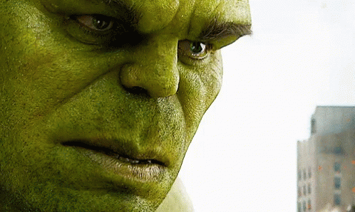

HULK (BRUCE BANNER):- Exposed to heavy doses of gamma radiation, scientist Bruce Banner transforms into the mean, green rage machine called the Hulk.
Bioscience genius Dr. Bruce Banner focused his major studies on the effects of gamma radiation on humans, working alongside Dr. Betty Ross at a Virginia University lab. Dr. Ross’ father, General “Thunderbolt” Ross of the U.S. Army, channeled Banner’s work into a program to develop weapons for the military, unbeknownst to both doctors. When Banner decided to test what he learned on himself, he triggered a fantastic transformation in himself that resulted in an immense, hulking figure fueled by his own rage. Having destroyed his lab as the creature, and inadvertently harming Ross in the process, Banner slipped away to avoid capture and study by the Army and began a desperate quest for a cure to his bizarre affliction.
To Know More Click on "HULK"
| HULK |
-->"BRING IT!! I AM WAITING"
Made By MOHIT YADAV